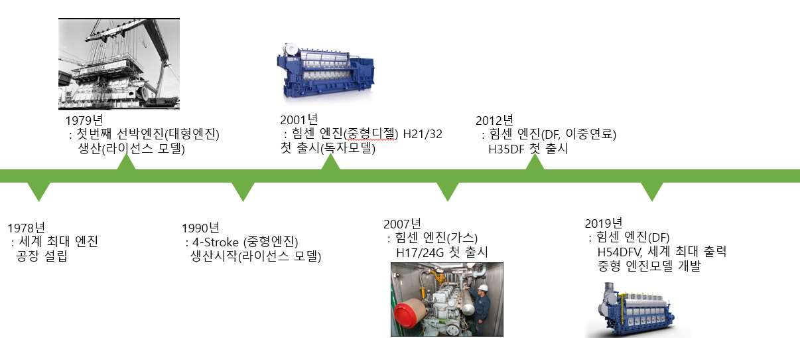
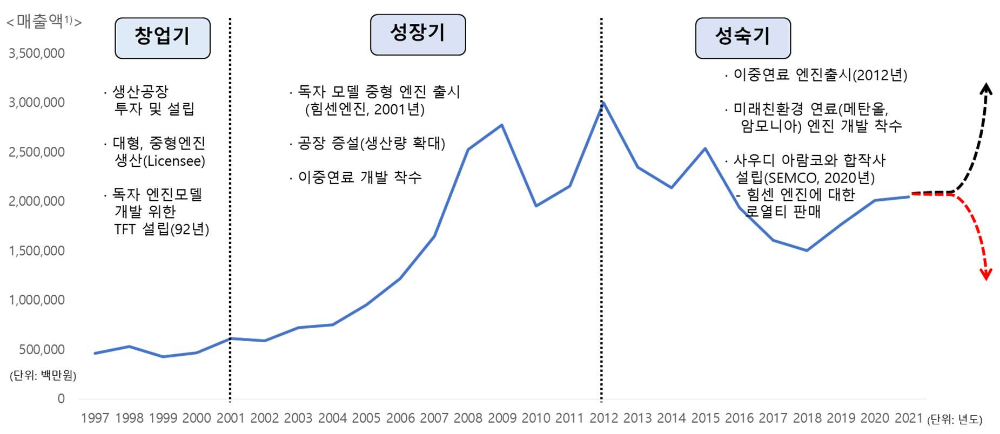
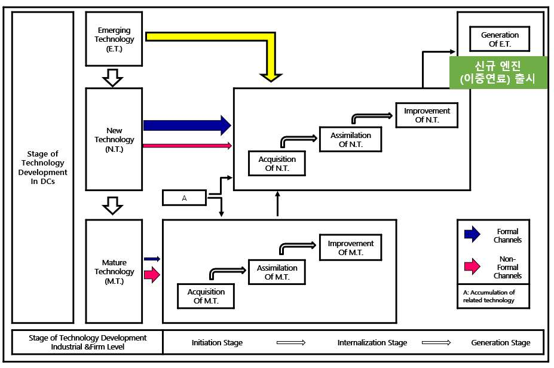
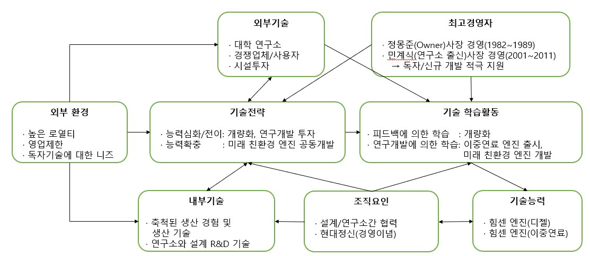

진입장벽이 높은 보수적 엔진시장에 후발주자로 참여한 현대중공업은 어떻게 독자모델인 힘센(HiMSEN) 엔진을 만들 수 있었고, 어떻게 중형 엔진 시장에서 세계 1위로 성공할 수 있었을까. 본 연구는 개발도상국 기업의 기술능력 축적과정(김왕동, 2002)을 주요 분석 틀로 현대중공업 엔진기계 사업의 혁신 요인을 고찰한다.
- 진입장벽이 높은 보수적 엔진시장에 후발주자로 참여한 현대중공업이 어떻게 독자모델인 힘센(HiMSEN) 엔진을 만들 수 있었는지, 그리고 어떻게 중형 엔진 시장에서 세계 1위로 성공할 수 있었는지 혁신 요인을 고찰한다.
- 개발도상국 기업의 기술능력 축적과정을 주요 분석 틀로 사용하여 연구하였다.
- 현대중공업 혁신의 주요 요인으로는 개량화(Hi Touch)와 신규 이중연료 엔진 개발 등이 있다.
- 이러한 주요 요인을 낳을 수 있던 추진력으로는 축적된 생산 경험, 지속적인 연구개발, 현대정신 등이 있다.
1. 연구배경 및 목적
현대중공업은 2021년 별도 회계기준으로 조선 6.3조원(77%), 엔진기계 1.5조원(18%), 해양플랜트 0.4조원(5%) 등 총 매출 8.3조원을 달성했다. 조선 빅3(현대중공업·대우조선해양·삼성중공업) 중 현대중공업만이 엔진기계사업을 하고 있으며, 조선 사업이 2014년 1조 8천억원이 넘는 대규모 적자를 시작으로 몇 년간 적자를 냈던 것과 달리 엔진기계 사업은 2014년(109억원 손실)을 제외하고 지속적인 흑자를 유지해왔다. 현대중공업이 보유한 세계일류 상품 23개(국내 최다) 중 엔진 사업부 상품이 12개로 조선(10개)보다 많다.
선박용 엔진은 선박가격의 약 10%를 차지하는 조선사업의 핵심기자재로, ① 선종·선형에 따라 표준화가 어려운 주문제작·선주 지정 방식이고 ② 내구성·안정성 등 고도의 신뢰성이 요구되며 ③ 엔진 생산 및 탑재까지 6~9개월이 소요되는 장납기 품목이라는 특징이 있다. 결론적으로 엔진 시장은 신규 진입이 어려운 시장이다. 이런 시장에서 유럽 기술업체로부터 기술제휴를 통해 제품을 양산하던 Licensee 현대중공업은 국내 유일 자체 브랜드 엔진인 힘센 엔진을 독자 개발해 중형엔진 시장에 진출했다.
2. 이론적 배경: 경쟁우위 확보를 위한 후발기업의 경쟁전략
Schnaars(1994)는 후발기업의 경쟁우위 전략으로 저가격 전략, 모방 후 개량 전략, 고품질 및 시장력(Market Power)을 제시했고, Golder and Tellis(1996)는 후발시장리더의 요인으로 대중시장 선진출, 경영자의 집념, 투자, 지속적 혁신 및 자산 레버리지를 제시했다. 본 연구가 주요 분석틀로 삼는 김왕동(2002)의 개발도상국 기업의 기술능력 축적과정 모형은 외부 환경요인이 내/외부 기술 원천과 기술전략에 영향을 주고, 조직이 관찰·평가·설계·실행 과정으로 기술학습하여 기술을 축적하며, 축적된 기술능력이 다시 내부 기술원천이나 기술전략으로 선순환(Cycling Process)된다고 본다. 보조 분석틀로는 산업단계별 기술개발 과정(이진주·배종태 외, 1988) 이론을 사용한다.
3. 산업 및 기업 분석
선박용 엔진은 대형선박 주엔진인 2행정(저속, 기술 선도업체 MAN)과 발전용 보조 엔진인 4행정(중속, 기술 선도업체 Wartsila)으로 분류된다. 현대중공업은 선박 추진용 대형엔진과 해상 발전용 중형엔진(힘센엔진)을 주력으로 판매 중이며, 2021년 기준 세계시장 점유율은 대형엔진 30%, 중형엔진 25%로 모두 세계 1위다. 국내 경쟁사와 비교하면 현대중공업의 엔진 최대 생산량은 1,600만 마력으로 HSD엔진·STX엔진(430만~500만 마력)의 3배 이상이며, 2021년 영업이익률도 8.3%로 적자인 HSD엔진, 소폭 흑자인 STX엔진과 대비된다.

현대중공업 엔진사업은 2001년 독자모델 출시 전까지를 창업기, 이중연료 출시 및 조선업 호황기까지를 성장기, 현재까지를 성숙기로 나눌 수 있다. 창업기 매출액은 5천억원 정도에 머물렀지만 성장기에는 시설 투자한 생산공장의 완성, 조선업 호황에 따른 수주량 증가, 독자 모델 중형엔진의 개발·양산으로 매출액이 3조원까지 증가했다. 성숙기에는 환경 규제로 엔진 연료 방식이 디젤에서 친환경 연료로 전환되면서 친환경 엔진 개발 능력이 중요한 분기점이 되고 있다.

4. 혁신 사례연구
4.1 (창업기/RQ1) 후발기업의 독자 엔진 개발 성공요인
축적된 생산 경험. 현대중공업은 그룹내(미포조선, 삼호중공업) 내부 물량(Captive Market)을 안정적으로 확보하면서 생산경험을 축적했다. 대형 디젤엔진은 1979년 1호기 생산 이후 2001년 3천만 마력(세계 1위 생산 업체 등극), 2005년 세계 최초 5천만 마력 생산을 달성했다. Licensor로부터 기본설계를 수령한 뒤 세계에서 제일 많은 제품을 생산하면서 생산 설계, 생산/조립 기술 능력을 심화할 수 있었다.
개량화(Hi Touch). 1970년대 오일쇼크 이후 연료 절감 경쟁이 일단락되자 고객의 요구는 유지·보수 주기 연장, 비용 최소화, 용이화, 신뢰성 향상 등으로 변하기 시작했다. 현대중공업은 제작 경험을 통해 고성능 제품보다 고객들이 사용하기 편한 제품에 대한 니즈가 높다는 시대의 변화를 읽었고, 이를 기반으로 기존 엔진의 Hi Tech(고성능·최첨단·고가)와 차별화된 Hi Touch 개념(Simple, Robust, Smart)의 독자모델을 개발했다. 구조의 단순화, 부품수 30% 절감, 1차 분해로 정비가 가능한 정비성이 핵심이다. 아키텍처론(Fujimoto, 2001)으로 보면 선박용 엔진은 Closed-Integral 구조인데, Hi Touch는 Integral의 복잡성을 축소함으로써 모델을 개량화한 것이다. 흡수역량 관점에서는 생산직 근로자가 전체 직원의 60%(7천명)를 차지하고 업계 최다인 총 29명(2017년 기준)의 대한민국 명장을 배출한 뿌리 깊은 생산 기술이, 현장으로부터 흡수·개량된 기술이 다시 설계/연구 직원들에게 전달·흡수되는 선순환을 가능하게 했다.
연구소와 설계 협력. 독자엔진 개발은 개발기간 총 8년 목표로 기술개발과 제품개발 2단계, 개발부(제품개발)와 사내 연구소·산학 협동(기초연구)의 2원화 방식으로 추진되었다. 이는 타케우치·노나카(1986)의 공유분업 중복형 타입에 해당하며, 의사결정 지연 요소가 발생하자 연구소 대표 연구원들을 장기간 개발부로 파견해 해결했다. 1992년 설계 담당자 위주의 엔진개발 TFT 구성, 1994년 단기통 엔진개발 착수, 1998년 Hi Touch 개념 도입을 거쳐 2000년 7월 새벽 3시 30분 힘센엔진 시운전에 성공했고, 2001년 선급 성능 Test와 기존 Licensor(MAN)의 기술 침해 여부 검증까지 통과했다. 다만 신뢰성이 중요한 엔진 시장에서 선뜻 신제품을 구매하려는 고객은 없었고, 2001년 10월 도미니카 공화국에 하자기간 1년 연장(2년), 성능 문제시 100% 보상 조건으로 첫 판매를 했다. 이후 품질을 인정받아 2005년 쿠바에 이동식 발전설비(PPS) 힘센엔진을 4.6억 달러에 판매하는 대규모 계약을 체결했다.
현대정신(경영이념). 현대중공업은 독자 기술이 없어 연간 약 100억원의 License 로열티를 부담했을 뿐 아니라, 1990년 대규모 엔진 수출 계약을 앞두고 기술 제휴사의 미승인으로 계약이 취소되는 사건까지 겪었다. 정몽준 사장의 오너 경영, 연구소 출신 민계식 사장의 기술 중심 경영으로 독자기술에 대한 니즈가 커지면서 1993년, 기존 Licensor와의 기술 제휴가 끊어질 수 있는 위험까지 안은 장기 프로젝트(실제 7년, 400억원 연구개발비 투입)가 승인되었다. 이런 강력한 추진력의 원천은 정주영 창업자의 철학이 기반이 된 경영이념, 즉 창조적 예지, 적극의지, 강인한 추진력의 '현대정신'에서 찾을 수 있다. 그 결과 중 하나로 2020년 11월 현대중공업그룹과 사우디 아람코는 연간 200여대 규모의 엔진제작 합작사(SEMCO)를 설립했고, SEMCO는 현대중공업으로부터 힘센엔진과 선박용 펌프를 라이선스 받아 생산할 예정이다. Licensee에서 Licensor로 전환된 획기적인 사건이다.
4.2 (성장기+성숙기/RQ2) 후발기업의 시장 확대 성공요인
연구개발·생산기술 투자. 연구개발비는 1999년 778억원에서 2010년 1,841억원으로 지속 증가했으나, 조선업 불황에 따른 2016년 대규모 구조조정(3.5조원 자구안) 이후 2017년 907억, 2018년 708억원으로 감소했다. 대신 투자 방식이 양적 투자에서 질적/선별 투자로 바뀌어 친환경 엔진, 엔진 출력 다양화 등 미래 핵심기술에 집중했고, 세계 최초 고압 배기가스 정화 장치 제작(2016년), HiMSEN 이중연료 세계 최대 출력 엔진(H54DF) 출시(2019년) 등의 성과를 냈다. 선박엔진 관련 특허(총 710건) 추이도 2015년 93건까지 상승 후 감소했지만 핵심 기술 특허는 지속되었다. 생산기술 교육에도 투자를 지속해 국제기능올림픽에 1983년부터 20회 연속 금메달을 획득하며 총 110명 출전, 105명 입상(금 51)의 기록을 세웠다.
신규 엔진(이중연료) 출시. 2012년 세계 최초로 이중연료 대형엔진(MAN과 공동개발), 이중연료 HiMSEN 엔진(독자개발), LNG 연료가스시스템(독자개발)을 연계한 이중연료 패키지를 개발했다. 이중연료 엔진은 디젤과 가스를 자유롭게 선택할 수 있는 엔진으로 탄소·질소·황 산화물 배출량을 줄이면서 디젤엔진과 동일한 성능을 발휘한다. 그 결과 2021년 LNG 선박용 중형 이중연료 엔진 시장에서 85%가 HiMSEN H35DF를 사용하는 놀라운 성과를 만들었다.

시설 투자와 미래 친환경 엔진. 엔진공장 생산 능력은 1999년 300만 마력에서 현재 1,600만 마력으로 5배 이상 확장되었고, 2,500억원 이상의 대규모 투자로 경쟁사 대비 규모의 경제를 통한 가격 경쟁력을 확보했다. 2021년 9월에는 업계 최초로 친환경 암모니아 연료공급시스템의 개념설계 기본인증(AIP)을 한국선급으로부터 획득했고, 2022년 메탄올 엔진, 2023년 암모니아 엔진, 2025년 수소엔진 개발을 목표로 연구를 진행 중이다. 디젤엔진에서 이중연료엔진(LNG는 중유 대비 이산화탄소 23% 저감)으로, 다시 차세대 친환경 엔진(메탄올 탄소 95% 저감, 암모니아·수소는 탄소 배출 없음)으로 지배적 기술(Dominant Design)이 변화하는 지금은 Double S-Curve 이론상 새로운 S커브로 전환하는 시점으로 평가할 수 있다.
4.3 사례 적용(기술능력 축적 연구)
높은 로열티와 영업제한 등 외부환경 변화에 외부요인(경쟁업체, 사용자)과 내부요인(생산 경험·기술)이 기술전략에 영향을 주었고, 최고경영자의 적극 지원과 설계/연구소간 협력, 현대정신 등 조직요인이 독자모델·이중연료 엔진을 개발하려는 기술전략과 기술학습활동에 영향을 더했다. 이렇게 확보된 기술능력은 다시 조직요인과 내부기술에 영향을 주어 미래 친환경 엔진 개발로 이어지는 선순환을 만들고 있다.

5. 결론 및 시사점
- 독자엔진 개발 성공요인(RQ1): 축적된 생산 경험, 개량화(Hi Touch), 연구소와 설계 협력, 현대정신(경영이념)이 창업기에서 성장기까지의 핵심요인이다.
- 시장 확대 성공요인(RQ2): 연구개발 투자, 생산기술 투자, 신규 엔진(이중연료) 출시, 시설투자, 미래 친환경 엔진 개발(메탄올·암모니아·수소 엔진)이 성장기에서 성숙기까지의 핵심요인이다.
- 전환점과 추진력: 창업기에는 기존 제품과 다른 차별화·개량화(Hi Touch), 성장기 이후에는 친환경 시대에 맞춘 신규엔진 개발(이중연료 엔진)이 전환점(Turning Point)이었다. 이런 전환점을 만든 추진력(Driving Force)은 축적된 생산 경험을 통해 흡수된 기술이 연구개발로 이어지고, 그 연구 성과를 통해 다시 새로운 것에 도전하는 경영이념(현대정신)에 있다.
- 남은 과제: 대형엔진(2행정)은 보수적 시장 특성상 여전히 독자모델 개발이 어려운 상태(SEMCO도 대형엔진은 MAN 등에서 라이선스)지만, 중형엔진 독자기술을 바탕으로 신규 친환경 연료 대형엔진의 초도품 공동 개발에 참여하고 있다.